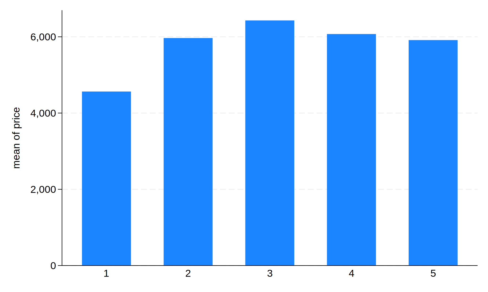
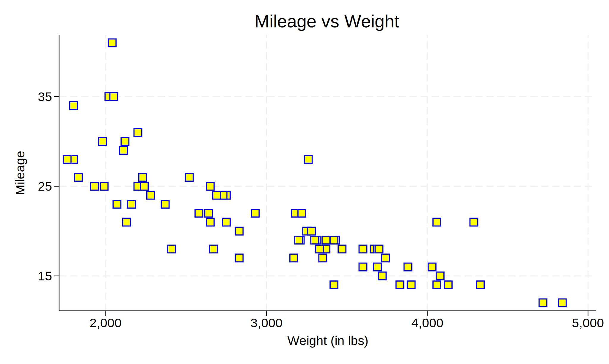

# Visualization
Stata has robust graphing capabilities that can both generate numerous types of plots, as well as modify them as needed. We’ll only cover the basics here, for a reference we would recommend A Visual Guide to Stata Graphics by Michael Mitchell, which lays out step-by-step syntax for the countless graphs that can be generated in Stata.
Let’s reload the auto dataset to make sure we’re starting on the same page.
. sysuse auto, clear
(1978 automobile data)
## The graph command
Most (though not all, see some other graphs below) graphs in Stata are created by the graph command. Generally the syntax is
graph <type> <variable(s)>, <options>The “type” is the subcommand.
For example, to create a bar chart of price by rep78, we could run
. graph bar price, over(rep78)

For further information, we could instead construct a boxplot. ~~~~ . graph box price, over(rep78)
<img src="Graph1.svg" >
There are a few other infrequently used graphs, see `help graph` for details.
There is a plot subcommand, `twoway`, which takes additional sub-subcommands, and supports a wide range of types.
```
graph twoway <type> <variable(s)>, <options>
```
`twoway` creates most of the scatterplot-esque plots. The "types" in `twoway` are subcommands different from the subcommands in non-`twoway` `graph`,
it takes options such as `scatter` to create a scatterplot:
. graph twoway scatter mpg weight
<img src="Graph2.svg" >
**Note:** For `graph twoway` commands, the `graph` is optional. E.g., these commands are equivalent:
```
graph twoway scatter mpg weight
twoway scatter mpg weight
```
This is *not* true of commands like `graph box`.
The options in the graphing commands are quite extensive and enable tweaking of many different settings. Rather than a full catalog of the options,
here's an example:. twoway scatter mpg weight, msymbol(s) /// > mcolor(blue) /// > mfcolor(yellow) /// > msize(3) /// > title(“Mileage vs Weight”) /// > xtitle(“Weight (in lbs)”) /// > ytitle(“Mileage”) /// > ylabel(15 “15” 25 “25” 35 “35”)
. ~~~~

Graphs made using twoway have an additional benefit - it is easy to stack them. For example, twoway lfit creates a best-fit line between the points: ~~~~ . twoway lfit mpg weight
<img src="Graph4.svg" >
This isn't really that useful. It would be much better to overlap those two - generate the scatter plot, then add the best fit line. We can easily do
that by passing multiple plots to `twoway`:
. twoway (scatter mpg weight) (lfit mpg weight)
<img src="Graph5.svg" >
Note that the order of the plots matters - if you can tell, the best-fit line was drawn on top of the scatter plot points. If you reversed the order
in the command (`twoway (lfit mpg weight) (scatter mpg weight)`), the line would be drawn first and the points on top of it.
Finally, note that options can be passed to each individual plot:
. twoway (scatter mpg weight, msymbol(t)) /// > (lfit mpg weight, lcolor(green))
<img src="Graph6.svg" >
Putting these options "globally", as `twoway (...) (...), msymbol(to)` would NOT work, as `msymbol` is an option specifically for `twoway scatter`
(and a few others), not for the more general `twoway`. There are options that apply to the `twoway` command, see `help twoway_options` for details.
There is an alternate way to specify the overlaid plots. These two commands are equivalent:
```
twoway (scatter mpg weight) (lfit mpg weight)
twoway scatter mpg weight || lfit mpg weight
```
We prefer the former as it makes it's cleaner to distinguish when you have multiple overlaid plots with their own options, but some authors may chose
the latter.
^#^^#^ Other graphs
There are a very large number of graphs which do not exist under the `graph` command. Most are very niche, but the most important general example is
histogram, which has its own command.
. histogram mpg (bin=8, start=12, width=3.625)
<img src="Graph7.svg" >
You can see a full list of the non-graph plots by looking at
```
help graph other
```
^#^^#^ Plotting by group
All graph commands accept a `by(<grouping var>)` option which will repeat the graphing command for each level of the grouping variable, and
display all graphs on the same output. For example,
. twoway (scatter mpg weight) (lfit mpg weight), by(foreign)
<img src="Graph8.svg" >
It often looks better to see the two plots overlaid on each other for a more direct comparison. To do this, rather than using `by(...)`, we'll instead
add each overlay conditionally:
. twoway (scatter mpg weight if foreign == 0) /// > (scatter mpg weight if foreign == 1) /// > (lfit mpg weight if foreign == 0) /// > (lfit mpg weight if foreign == 1)
<img src="Graph9.svg" >
Notice that Stata automatically made each plot a separate color, but not in a logical fashion. Here's a cleaned up version:
. twoway (scatter mpg weight if foreign == 0, mcolor(orange)) /// > (scatter mpg weight if foreign == 1, mcolor(green)) /// > (lfit mpg weight if foreign == 0, lcolor(orange) lwidth(1.4)) /// > (lfit mpg weight if foreign == 1, lcolor(green) lwidth(1.4)), /// > legend(label(1 “Domestic”) label(2 “Foreign”) order(1 2)) /// > title(“Mileage vs Weight”) xtitle(“Weight (lbs)”) /// > ytitle(“Mileage”)
~~~~

(Since its not entirely clear from the code, the order(1 2) argument inside legend serves two purposes - first, it “orders” the entries in the legend box, but secondly and more importantly, it does not contain 3 or 4. If you look at the previous plot, it had four entries in the legend for the two scatters plus two lfits. By excluding 3 and 4 from order [3 and 4 corresponding to the two lfits], their legend entries are ignored.)
## Getting help on Graphs
There are a ton of options in all these graphs. Rather than list them all, we instead direct you to some various help pages.
For general assistance, start with
help graphEach individual type of graph has its own help page:
help graph box
help graph twoway
help twoway scatter
help histogramThere are various generalized options which are the same over the variety of plots. These can be found in the documentation of each individual graph, or you can access them directly:
| Topics | Help command |
|---|---|
| Help with titles, subtitles, notes, captions. | help title_options |
| Axis labels, tick marks, scaling, etc. | help axis_options |
| Manipulating the legend | help legend_options |
Modifying points (e.g. scatter) |
help marker_options |
| Adding labels to markers | help marker_label_options |
Options for any lines (e.g. lfit) |
help cline_options |
## Displaying multiple graphs simultaneously
You may have noticed that opening a new plot closes the old one. What if you wanted to compare the plots? The behind-the-scenes reason that the old plots are closed is that Stata names each plot and each plot can only be open once. The default name is “Graph”, so with each new plot, the “Graph” plot is overridden. If you closed a plot and wanted to re-open it, you can run the following at any point until you run another graph just like with estimation commands.
graph display GraphWhen we create a new plot with the default name, we lose the last one.
If we give a plot a non-default name, it will be saved (so that it can be re-displayed later) and more importantly, will open a new window without closing the last. Running two plots with custom names opens two separate windows. (These are not run in the notes because obviously this won’t demonstrate well, but try them on your own.)
hist price, name(g1)
hist mpg, name(g2)Names can be re-used (and plots re-generated) easily:
hist price, title("Histogram of Price") name(g1, replace)We can also list (using dir), re-display (using display), or drop graphs (using drop):
graph dir
graph display g1
graph drop g1
graph drop _allFinally, if you’d rather have all the graphs in one window with tabs instead of separate windows, use
set autotabgraphs on(You can pass the permanently option to not have to do this every time you open Stata.) You still need to name graphs separately.
## Exercise 2
Reload the NHANES data if you haven’t:
webuse nhanes2, clearUsing twoway scatter and twoway lfit, create a scatter plot of diastolic and systolic blood pressure, by gender. Be sure to color the lines and points consistenly and to clean up the legend.